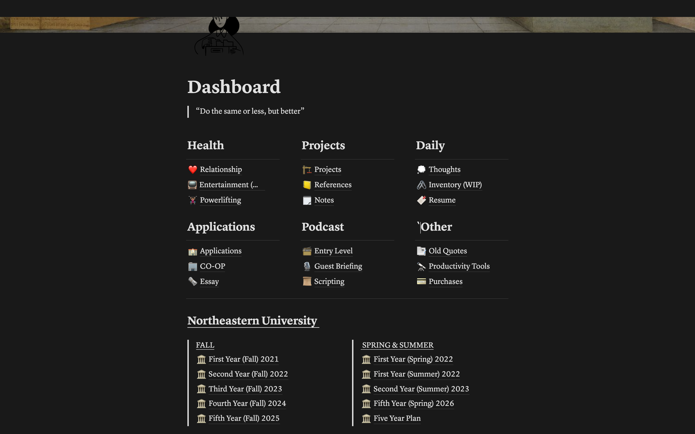
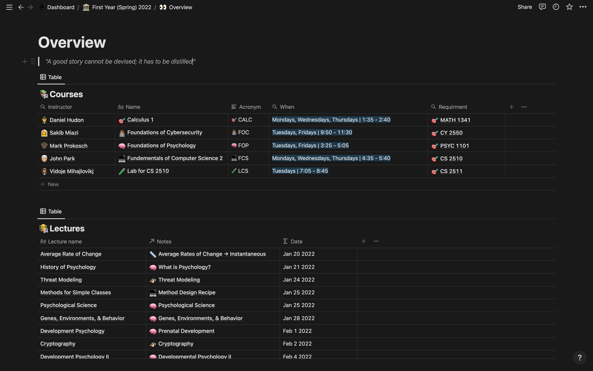
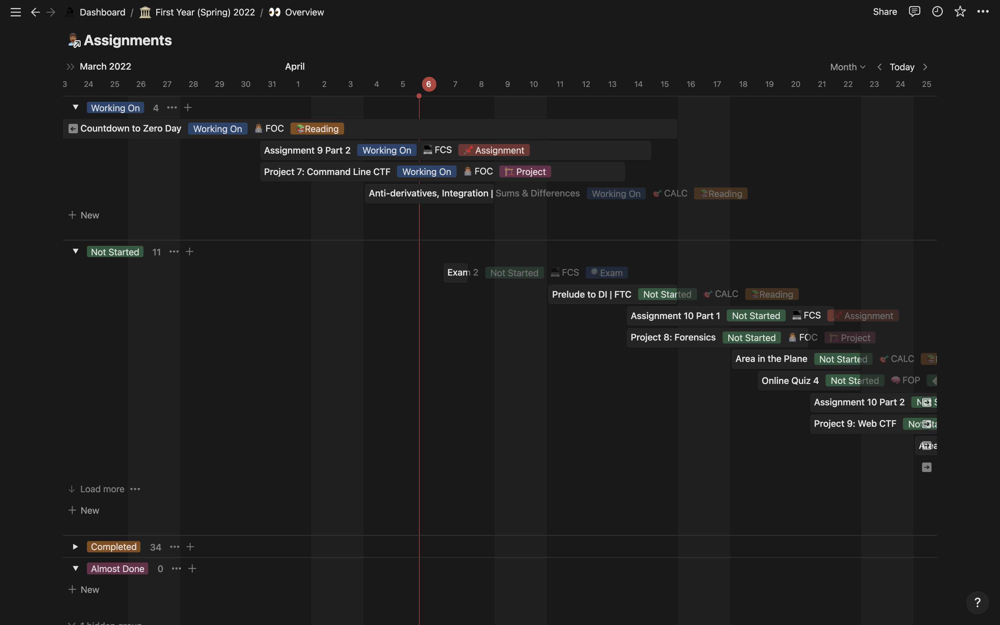

If you've never heard, Notion is a tool for organizing your work and life.
You can create notes, docs, and to-do lists with Notion and then organize them into workflows.
Notion is simple and easy to get started with, but it's also powerful enough to help you get your work done.
Notion has quickly become my go-to tool for maintaining a schedule and staying organized while having ADHD.
I've tried a lot of different productivity tools and systems over the years, but none of them have been as versatile and meaningfully functional as Notion has.
The GIST
Here's how Notion has helped me stay on top of my schedule and stay organized and how it can help you as well:
1. The calendar feature is fantastic. I've always struggled to keep track of my schedule and ensure I don't miss any critical deadlines.
The calendar feature in Notion has been a lifesaver. I can easily see what's coming up and make sure I'm prepared for it.
2. The to-do list feature is also great. I tend to forget about things I need to do unless I write them down.
The to-do list feature in Notion helps me keep track of everything I need to do in one place.
I can even set reminders for myself, so I don't forget anything.
3. I can easily keep track of projects with Notion. I'm working on a lot of different projects at any given time.
Notion helps me keep track of each project and all of its tasks. I can even share projects with other people and collaborate with them easily.
4. Notion helps me stay focused. When I sit down to work on something, I get distracted easily.
Notion helps me stay focused by keeping everything I need in one place.
I don't have to worry about switching between different tabs or programs.
Everything I need is right there in front of me.
5. Notion is flexible and easy to use. I've tried a lot of different productivity tools and systems,
but most of them have been too complicated or inflexible. Notion is different. It's easy to use and very flexible.
I can customize it to fit my needs and change it as my needs change.
How I use Notion in College
These are straightforward reasons why Notion has been helpful, and you can take it at face value,
create your first database and stop there, but why, when it has tremendous productive potential.

As you can tell, I track everything I can with it, coming from my spending habits to what I watch to what exercises I do.
It could be considered overkill but allowing myself to pull all these thought processes out of my brain and into a place I
can actively recall enables me to point more brainpower at the things that do require serious focus.
This is most explicit in my semester pages.

This first part gives me explicit information that I take in;
most of the stuff here is information I know with certainty but always enjoy having to combat moments of confusion.
It's also connected to a larger framework. The courses tab takes in data from several databases that hold my course
path through my years at Northeastern and the courses for this specific semester.
With it, comes lectures and lecture notes that I can access,
review and take advantage of (yes, I take notes on my math courses usually).
LaTeX is a potent tool that is integrated into Notion.

This next part is my main schedule of coursework. As most college courses reveal the work expected for the semester
during syllabus week, I take advantage of that and pour all the due dates onto this page which allows me to
continuously track what work I need to get done and how much time I have left.
I will not deny that using Notion as I do is time-consuming, but it's only for a sector of time.
Then it becomes automatic and highly beneficial to a consistent organizational experience.
Notion Template